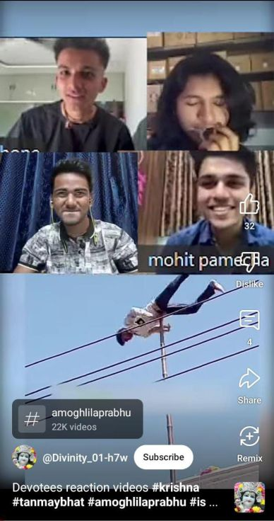

This is Just one of many examples.
Posted on : 27th March, 2025

Due to immature or zero understanding of Krsna consciousness, here some kids, who are claiming to be devotees are seen, reacting on Funny videos and speaking all kinds of trash, under the name of Bridge Preaching or some Neo Krsna Conscious tactic to attract people of particular age-group.
Personally, I feel reacting on social issues from an uncompromising philosophical point of view, is a brilliant way of preaching as done by our predecessor Ācaryas. But here unfortunately nothing devotional is Visible but Mundane talks in and of course in mundane way is clearly Visible to any staunch follower of Krsna Consciousness under the ultimate guidance of Srila Prabhupada.
As Listed by Srila Rupa Goswāmi Prabhupada in his Book Sri Upadesāmrta which is presented as Nectar of Instructions by ISKCON founder-Acarya. Rupa goswamipad writes on how ones bhakti is destroyed. He says,
atyāhāraḥ prayāsaś ca
prajalpo niyamāgrahaḥ
jana-saṅgaś ca laulyaṁ ca
ṣaḍbhir bhaktir vinaśyati
(Nectar of instructions verse 2)
According to Sri Rupa, out of 6 activities which spoil bhakti 2 are Prajalpa and niyamagraha Prajalpa means, talking unnecessarily about mundane subject matters or talks devoid of Krsna. "When we mix with a few friends, we immediately begin unnecessary talking, sounding just like croaking toads. If we must talk, we should talk about the Kṛṣṇa consciousness movement. Those outside of the Kṛṣṇa consciousness movement are interested in reading heaps of newspapers, magazines and novels, solving crossword puzzles and doing many other nonsensical things. In this fashion people simply waste their valuable time and energy.[1]" The first principle of Bhakti is to not desire anything except krsna, if we indulge ourselves in any activity devoid of Krsna Consciousness, we are breaking the basic pillars of bhakti. it's just like bathing of elephant; his cleaning has no value because he again loiters in mud, same way if this subtle and minute alertness is missing then there is no value of our Sadhna. Secondly, niyamāgrahaḥ; generally, the common symptom in all such neophyte devotees is to either taking the rules and regulations as cheap or very restrictive killer of Independence types. Or to completely ignore them because of some hidden agendas like gaining followers and mundane benefits etc. which is the third impediment laulyaṁ in the path of bhakti. Under niyamagraha, failing to follow these strict regulations will ultimately degrade oneself to become a Sahajiya deviant and that will obstruct one's own progress and others as well.
Personal & humble Advice to such Content creators.
Stop it! and take this movement in a grave and serious manner. under the name of bridge preaching {if that is your intention} don't mispresent the movement standards. By looking at you young devotees many newcomers will think that watching reels, useless videos, following trends is all okay in devotional life. And if you all don't know about the rules and regulations, please read Srila Prabhupad Books very seriously especially this nectar of instructions. Please contact me at bhagavadgyaan06@gmail.com for any further clarification. Don't take it as humiliating, I am your well-wisher, remember by bringing people in bhakti with such tactics we are not doing any good to them, someday they have to change, and you have to answer them but how? when you are only busy in doing these stupid things. Grow up! Be responsible! This movement is for Serious students not for funky entertainers.
Hope this meets you with good health, Hare Krsna.
For Knowing More about such issues and Srila Prabhupad's Position on such issues which are newly arising please watch this playlist of 3 Important Lectures - "Neo Krishna Consciousness"
~ Admin